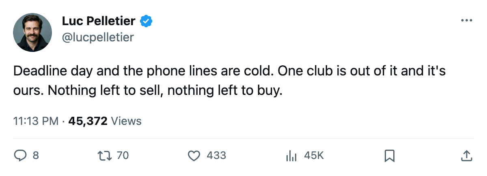
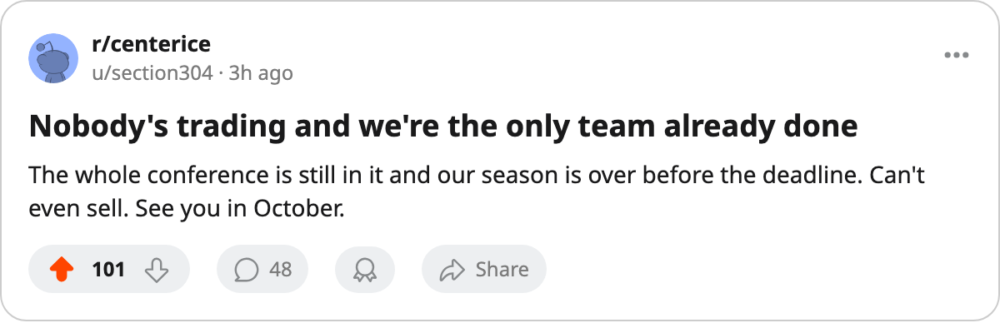

Only One Club Is Out, and the Deadline Wire Is Empty
The calendar arrives at its deadline with no trades confirmed and one seller that has nothing left to play for.
 Luc PelletierMontreal correspondent · Home Ice Network
Luc PelletierMontreal correspondent · Home Ice Network
Today's the trade deadline. The league confirmed no trades, and the race table has one club out of the eight:  Montreal Canadiens, at 57 points.
Montreal Canadiens, at 57 points.
Almost nobody else is out. The East's eighth line runs 5 points wide, from the Rangers' 76 down to Buffalo's 71, and every club in that group has at least 8 games left. The West's line is the same 5,  Phoenix Coyotes at 76 over
Phoenix Coyotes at 76 over  St. Louis Blues at 71.
St. Louis Blues at 71.
 Tampa Bay Lightning's Michael Burt told The Tunnel's Marcus Bell this month: "If a piece falls into my lap that makes us harder to play against in a seven-game series, I can call ownership tonight and the money's there. Most clubs can't do that."
Tampa Bay Lightning's Michael Burt told The Tunnel's Marcus Bell this month: "If a piece falls into my lap that makes us harder to play against in a seven-game series, I can call ownership tonight and the money's there. Most clubs can't do that."
Tampa Bay sits third in the East at 94 points with  Vincent Lecavalier89 out to April 1. The Lightning have lost 3 straight.
Vincent Lecavalier89 out to April 1. The Lightning have lost 3 straight.
The lone seller has little to move and no reason to hurry. Montreal beat Tampa Bay 4-2 on March 15, its only game since the last edition.  Mike Ricci74 returns from a groin on March 20 and
Mike Ricci74 returns from a groin on March 20 and  Chad Kilger76 from an elbow on March 22, so the roster only gets fuller. The Islanders visit Montreal on March 20; the Canadiens have won all 3 meetings this season, 12-8 on goals.
Chad Kilger76 from an elbow on March 22, so the roster only gets fuller. The Islanders visit Montreal on March 20; the Canadiens have won all 3 meetings this season, 12-8 on goals.
Below the line, three clubs still have a mathematical path.  Columbus Blue Jackets and
Columbus Blue Jackets and  Los Angeles Kings trail the West's eighth by 6 and 7 points with 10 games left.
Los Angeles Kings trail the West's eighth by 6 and 7 points with 10 games left.  Philadelphia Flyers trails the East's by 9 with 11 left. Those GMs can say the race is alive. The table agrees.
Philadelphia Flyers trails the East's by 9 with 11 left. Those GMs can say the race is alive. The table agrees.
Tonight the eighth line takes the ice: Buffalo at the Rangers.

